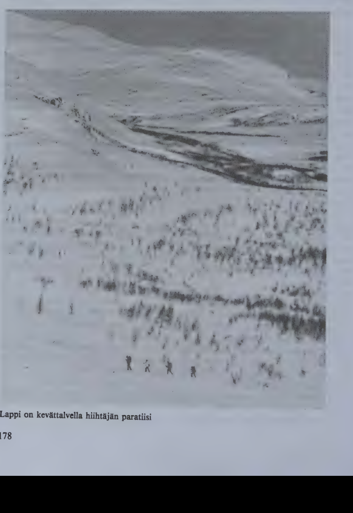
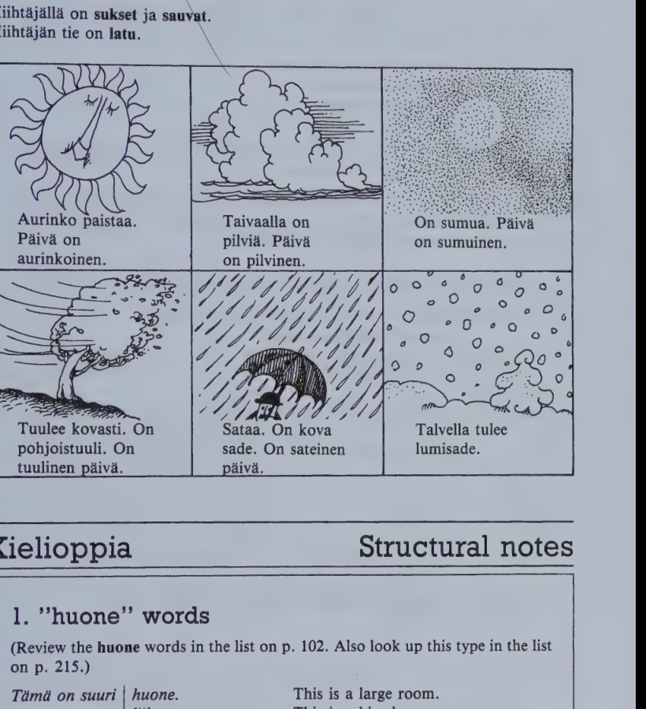
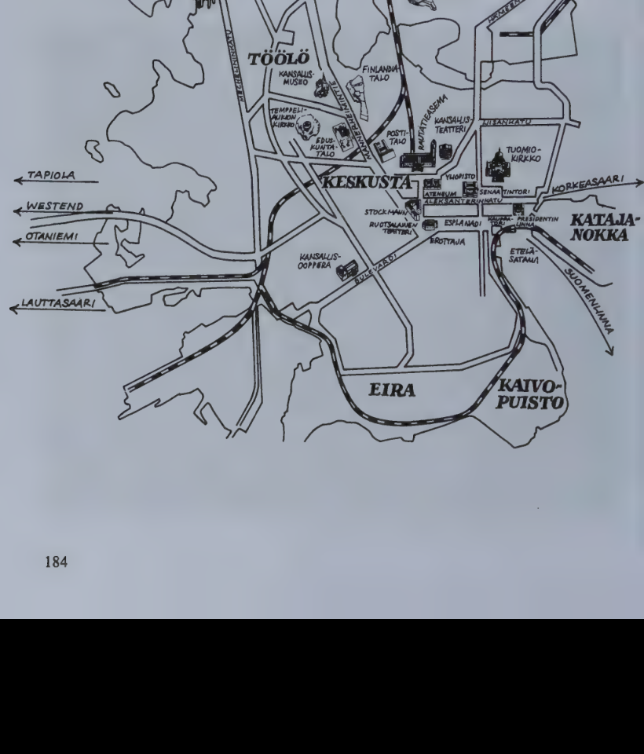

Kappale 36 / Lesson 36#
Vuodenajat ja saa / Seasons and weather#
Annikki Miettinen ja Linda Hill keskustelevat. On ensimmainen (paiva) helmikuuta.
Suomi |
English |
|---|---|
1. L. Aika kova pakkanen tanaan! |
1. L. Pretty cold today! |
2. A. Niin, viisitoista astetta pakkasta. Celsiusta, tarkoitan. |
2. A. Yes, minus fifteen (degrees). Centigrade, I mean. |
3. L. Ja viela tallainen kova tuuli. |
3. L. And such a wind, too. |
4. A. Meren rannalla tuulee paljon. Muuten, harvoin Helsingissa on nain paljon pakkasta. Huomenna voi taas sataa vetta, Helsingin ilmasto on sellainen. Mutta sisamaassa on oikea talvi ja sataa paljon lunta. |
4. A. It is very windy by the sea. By the way, it’s seldom that we have so many degrees of frost in Helsinki. Tomorrow it may rain again, the Helsinki climate is like that. But inland, they have real winter, and it snows a lot. |
5. L. On kai paras lahtea Lappiin, jos haluaa todella hiihtaa. |
5. L. I suppose you’d better go to Lapland if you really want to ski. |
6. A. Mutta nei viela. Lapissa on paras hiihtokausi maalis- ja huhtikuussa. Aurinko paistaa eivatka paivat ole enaa niin lyhyita. |
6. A. But not yet. The best skiing season in Lapland is in March and April. The sun shines and the days are no longer so short. |
7. L. Kuinka pitka talvi on taalla Helsingissa? |
7. L. How long is winter here, in Helsinki? |
8. A. Yleensa marras- tai joulukuusta maaliskuuhun. Huhtikuussa lumi sulaa, tulee kevat. |
8. A. From November or December to March, in general. The snow melts in April; spring arrives. |
9. L. Kukat alkavat kukkia ja tulee lammin? |
9. L. The flowers start coming out and it gets warm? |
10. A. Vahitellen. |
10. A. By and by. |
11. L. Minkalainen ilma on kesalla? Onko milloinkaan todella kuuma? |
11. L. What’s the weather like in summer? Is it ever really hot? |
12. A. Joskus voi olla vahan yli 30 (kolmekymmenta astetta) lamminta. |
12. A. It can sometimes be a little over thirty plus. |
13. L. Joku on sanonut, etta te suomalaiset olette aivan erilaisia kesalla ja talvella. Onkohan se totta? |
13. L. Somebody told me that you Finns are quite different in summer and in winter. I wonder if it’s true? |
14. A. Milla tavalla erilaisia? |
14. A. Different in what way? |
15. L. Iloisia kesalla, surullisia talvella. |
15. L. Happy in summer, sad in winter. |
16. A. No, onhan se mahdollista. Talvi on pimea ja kylma, kesa ihana, vaikka lyhyt. Silloin kaikki ovat lomalla, uivat ja ottavat aurinkoa, ja ovat hyvalla tuulella. |
16. A. Well, it’s possible, of course. The winter is dark and cold, the summer lovely, although it is short. Everybody is on vacation then, swimming and sunbathing and they are in a good mood. |
17. L. Kuinka pitka kesaloma taalla on? |
17. L. How long are summer holidays in Finland? |
18. A. Tyontekijoiden vuosiloma on kuukausi tai enemman. Koulut loppuvat toukokuun lopussa ja alkavat elokuussa, yliopistot syyskuussa. |
18. A. The annual vacation for employees is a month or more. Schools break up at the end of May and start in August; universities in September. |


Kielioppia / Structural notes#
1. “huone” words#
Review the huone words in the list on p. 102. Also look up this type in the list on p. 215.
Finnish |
English |
|---|---|
Tama on suuri huone. |
This is a large room. |
Tama on iso liike. |
This is a big shop. |
Talossa on viisi huonet/ta. |
The house has five rooms. |
Talossa on viisi liiket/ta. |
There are five shops in the building. |
Huonee/n asukas. |
The inhabitant of the room. |
Liikkee/n omistaja. |
The owner of the shop. |
Kuinka paljon huonei/ta? |
How many rooms? |
Kuinka paljon liikkei/ta? |
How many shops? |
Tule tahan huonee/seen! |
Come into this room! |
Tule tahan liikkee/seen! |
Come into this shop! |
Note these points about huone words, a very common word type:
The principal parts are:
huone huonetta huoneen huoneita
liike liiketta liikkeen liikkeitA
The “into” case ends in
-seen(pl.-siin).Only two forms have weak grade:
liike, liiketta.
Words ending in -e used to end in a consonant. This is why they still closely resemble words ending in a consonant.
Among the very few -e words inflected differently from huone are nukke (nukkea nuken nukkeja), itse (-a/-n) self, kolme (-a/-n) three, ale (-a-n-ja) sale, and first names like Kalle, Ville, Anne etc.
2. Date and other expressions of time#
15.9.1986 = viidestoista (paiva) syyskuu/ta (vuonna) 1986
syyskuun viidestoista (paiva)
The ordinals are listed in lesson 19:2.
vuodenaika |
English |
milloin? |
English |
|---|---|---|---|
kevat (kevaa/n) |
spring |
kevaa/lla |
in spring |
kesa |
summer |
kesa/lla |
in summer |
syksy |
autumn, fall |
syksy/lla |
in autumn, in fall |
talvi (talve/n) |
winter |
talve/lla |
in winter |
kuukausi |
English |
expression |
English |
|---|---|---|---|
tammikuu |
January |
tammikuu/ssa |
in January |
joulukuu |
December |
joulukuu/ssa |
in December |
If needed, review other expressions of time, lessons 20:2 and 23:1.
3. Third person singular of the verb used impersonally#
Finnish |
English |
|---|---|
Koiria ei saa tuoda myymalaan. |
It is not allowed to (“One must not”) bring dogs into the store. |
Lapissa voi hiihtaa. |
One can ski in Lapland. |
Kun on vasynyt, unohtaa helposti asiat. |
When one is (we, you, people are) tired, one easily forgets things. |
The 3rd person singular of the verb can be used impersonally, and does not refer to any specific person. The verb is then used without any subject-word in Finnish, whereas the corresponding English expression has a subject like “one”, “we”, “you”, “they”, “people”.
The use of a formal subject-word is, in general, unknown in Finnish, as shown in the examples below where English uses the subject “it”:
Finnish |
English |
|---|---|
Sataa. On kuuma. |
It is raining. It is hot. |
On helppo sanoa niin. |
It’s easy to say so. |
4. “haluta” and “merkita” verbs#
a) haluta verbs#
Basic form |
English |
Present |
Past |
Past participle |
Imperative |
|---|---|---|---|---|---|
halu/ta |
to want |
halua/n |
halu/si |
halun/nut |
halut/kaa! |
vasta/ta |
to answer |
vastaan |
vasta/si |
vastan/nut |
vastat/kaa! |
Most verbs ending in vowel + ta belong to the haluta type. They show the following characteristics in their conjugation:
The present tense has an “extra”
-a- (-a-).The past tense has an “extra”
s-.The past participle has an “extra”
-n-.The imperative pl. has an “extra”
-t-.The entire present and all forms using its stem have strong grade while the rest of the forms are weak:
tava/ta to meet tapaa/n tapasi/n tavan/nut alkAA tavat/ko!
tapaa/t tapasi/t
tapaa tapasi
b) merkita verbs#
Basic form |
English |
Present |
Past |
Past participle |
Imperative |
|---|---|---|---|---|---|
merki/ta |
to mean |
merkitse/n |
merkits/i |
merkin/nyt |
merkit/kAA! |
Most verbs ending in i + ta (ta) belong to the merkita type. They show the following characteristics in their conjugation:
The present and past tense have an “extra” element
-ts-.The other forms have the same “extra” elements as
halutaverbs.No
k p tchanges occur.
Sanasto / Vocabulary#
Finnish |
English |
|---|---|
aste-tta-en-ita |
degree, grade |
harvoin (# usein) |
seldom, rarely |
+hiihta/a hiihdan hiihti hiihtanyt |
to ski |
ilmasto-a-n-ja |
climate |
iloi/nen-sta-sen-sia |
glad, joyful, merry, jolly, happy, gay |
+kausi kautta kauden kausia |
period, term, season |
+kukki/a kukin kukki kukkinut |
to flower, bloom, blossom |
lumi lunta lumen lumia |
snow |
sataa lunta |
to snow |
meri merta meren meria |
sea |
pakka/nen-sta-sen-sia |
frost, temperature below freezing-point |
pimea-(t)a-n pimeita (# valoisa) |
dark, obscure |
+sata/a (sadan) satoi satanut |
to rain |
sula/a-n suli sulanut |
to melt, thaw |
surulli/nen-sta-sen-sia |
sad, melancholy, dreary |
saa-ta-n saita (cp. ilma) |
weather |
+tarkoitta/a tarkoitan tarkoitti tarkoittanut |
to mean, refer to, purport |
+tosi totta toden tosia |
true |
se on totta; puhua totta |
it’s true; tell the truth |
tuuli tuulta tuulen tuulia |
wind; mood, humor, temper |
tuul/la (tuulen) tuuli tuullut |
to be windy, to blow |
tyon/tekija-a-n-tekijoita |
employee |
vahitellen |
gradually, by and by |
yleensa |
in general |
Kuu/kaudet / Months#
Finnish |
English |
|---|---|
tammi/kuu-ta-n-kuita |
January |
helmi/kuu (helmi pearl) |
February |
maalis/kuu |
March |
huhti/kuu |
April |
touko/kuu (touko sowing; crop) |
May |
kesa/kuu (kesa summer) |
June |
heina/kuu (heina hay) |
July |
elo/kuu (elo harvest; life) |
August |
syys/kuu (syys = syksy) |
September |
loka/kuu (loka mud, dirt) |
October |
marras/kuu (marras obsol. dead) |
November |
joulu/kuu (joulu Yule, Christmas) |
December |
Vuoden/ajat / Seasons#
Finnish |
English |
|---|---|
kevat-ta kevaan kevaita |
spring |
kesa-a-n kesia |
summer |
syksy-a-n-ja |
autumn, fall |
talvi talvea talven talvia |
winter |
*
Finnish |
English |
|---|---|
pilvi pilvea pilven pilvia |
cloud |
+sade-tta sateen sateita |
rain |
sateen/varjo-a-n-ja |
umbrella |
suksi suksea suksen suksia |
ski (one of a pair of skis) |
